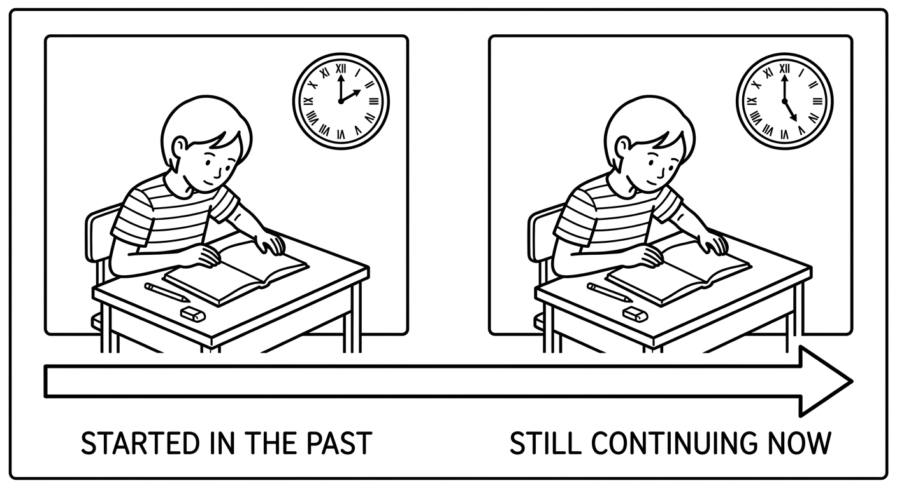
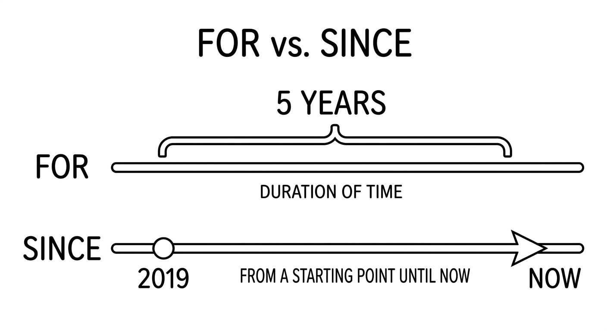
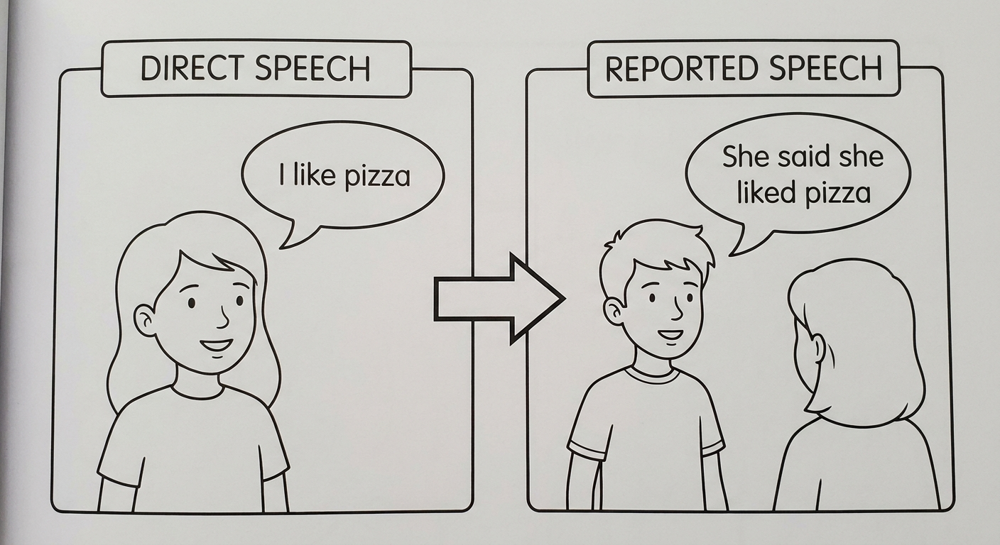
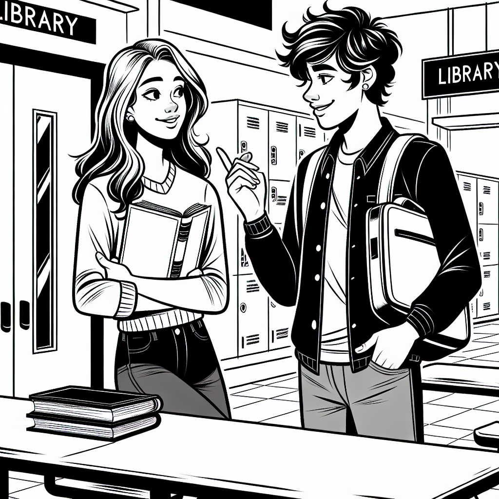
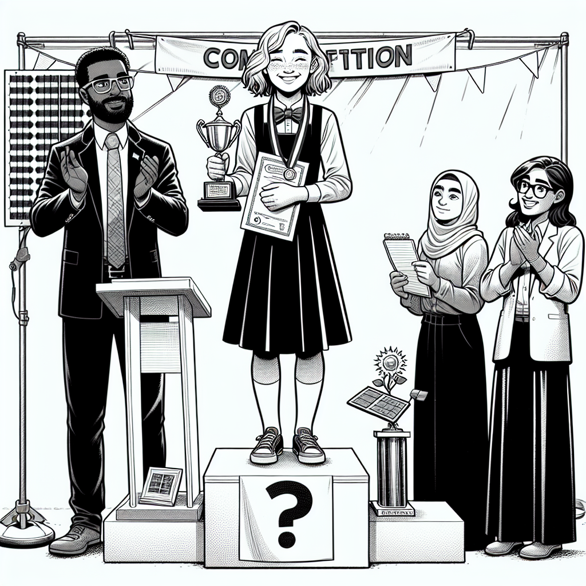

Present Perfect (Continued) & Reported Speech
Deepen your understanding of the Present Perfect and learn how to report what other people said.

Present Perfect — Advanced Uses
We use the Present Perfect Continuous to talk about actions that started in the past and are still continuing, or have just stopped with a visible result.
| Form | Structure | Example |
|---|---|---|
| Affirmative | Subject + have/has + been + verb-ing | She has been studying all day. |
| Negative | Subject + have/has + not + been + verb-ing | I haven't been sleeping well. |
| Interrogative | Have/Has + subject + been + verb-ing? | Have you been waiting long? |
Key uses:
- Duration of an ongoing activity: I have been learning English for three years.
- Recent activity with visible result: You're sweating! Have you been running?
- Temporary situations: He has been working at this company since January.
We use for and since with the Present Perfect to talk about duration.
| Word | Used with | Examples |
|---|---|---|
| for | a period of time (duration) | for two hours, for six months, for a long time |
| since | a point in time (starting point) | since 2020, since Monday, since I was a child |
Both work with Present Perfect Simple and Continuous:
- I have lived here for five years.
- I have been living here since 2021.
- She has worked at the hospital for ten years.
- She has been working at the hospital since 2016.

Present Perfect Simple vs Continuous
I have read three books this month.
Eu li três livros este mês. (foco no resultado: 3 livros completos)
I have been reading a really good book lately.
Eu tenho lido um livro muito bom ultimamente. (foco na atividade em andamento)
They have known each other for ten years.
Eles se conhecem há dez anos. (verbos de estado usam Simple)
They have been playing soccer since 3 o'clock.
Eles estão jogando futebol desde as 3 horas. (atividade temporária em andamento)
She has visited Paris twice.
Ela visitou Paris duas vezes. (quantidade definida)
She has been travelling around Europe for two weeks.
Ela está viajando pela Europa há duas semanas. (duração da atividade)
"I have lived here for 5 years" and "I have been living here for 5 years" are both correct and have almost the same meaning. The Simple form suggests a more permanent situation, while the Continuous form can suggest the situation might change. For most everyday situations, both are acceptable.
Suggested time: 25 minutes
Key distinction: Help students see that Simple = result/quantity, Continuous = activity/duration. Use timeline diagrams on the board to illustrate the difference.
Common L1 interference: Portuguese speakers often translate "há" (for time) as "there is." Reinforce that "I have lived here for 5 years" is the correct pattern, not "There is 5 years I live here."
Complete the sentences with the correct form of the verb in parentheses. Use the Present Perfect Simple or Continuous.
Translate the sentences from Portuguese to English using the Present Perfect Simple or Continuous.
Eu moro nesta cidade desde 2018.
I have lived / have been living in this city since 2018.Ela está estudando para a prova o dia inteiro.
She has been studying for the test all day.Nós já visitamos o Rio de Janeiro duas vezes.
We have already visited Rio de Janeiro twice.Há quanto tempo você está esperando?
How long have you been waiting?Ele trabalha nesta empresa há dez anos.
He has worked / has been working at this company for ten years.Eu nunca comi comida japonesa.
I have never eaten Japanese food.Reported Speech (Indirect Speech)
When we report what someone said, we usually change the tense, pronouns, and time/place words.
Direct speech: The exact words someone said, in quotation marks.
Reported speech: Telling someone what was said, without quotation marks.
| What changes | Direct Speech | Reported Speech |
|---|---|---|
| Tenses | "I like pizza." | She said she liked pizza. |
| Pronouns | "I am tired." | He said he was tired. |
| Time words | "I'll do it tomorrow." | She said she would do it the next day. |
| Place words | "I live here." | He said he lived there. |
The most common reporting verbs are:
- said — He said (that) he was busy. (no person after "said")
- told — He told me (that) he was busy. (always needs a person)
- asked — She asked me if/whether I was coming. (for questions)
- explained — The teacher explained that the test was on Friday.
Note: The word "that" is optional in reported speech. "He said he was busy" and "He said that he was busy" are both correct.
Tense Backshift Table
| Direct Speech (original tense) | Reported Speech (backshifted) | Example |
|---|---|---|
| Present Simple | Past Simple | "I work" → He said he worked |
| Present Continuous | Past Continuous | "I am working" → He said he was working |
| Past Simple | Past Perfect | "I worked" → He said he had worked |
| Present Perfect | Past Perfect | "I have worked" → He said he had worked |
| will | would | "I will help" → He said he would help |
| can | could | "I can swim" → He said he could swim |
| may | might | "I may come" → He said he might come |
| must | had to | "I must go" → He said he had to go |

Direct to Reported Speech
"I am very happy today." → She said she was very happy that day.
"Eu estou muito feliz hoje." → Ela disse que estava muito feliz naquele dia.
"I will call you tomorrow." → He told me he would call me the next day.
"Eu vou te ligar amanhã." → Ele me disse que me ligaria no dia seguinte.
"I can speak three languages." → She said she could speak three languages.
"Eu sei falar três idiomas." → Ela disse que sabia falar três idiomas.
"Do you like music?" → He asked me if I liked music.
"Você gosta de música?" → Ele me perguntou se eu gostava de música.
"Where do you live?" → She asked me where I lived.
"Onde você mora?" → Ela me perguntou onde eu morava.
"I bought a new car." → He said he had bought a new car.
"Eu comprei um carro novo." → Ele disse que tinha comprado um carro novo.
Common mistakes with reported questions: In reported questions, use statement word order (subject before verb). Do NOT use question word order or question marks!
- Wrong: She asked me where did I live?
- Correct: She asked me where I lived.
- Wrong: He asked me do I like music?
- Correct: He asked me if I liked music.
Dialogue and Its Reported Version

Suggested time: 30 minutes
Activity: Read the direct dialogue aloud with a student. Then have pairs practice converting each line to reported speech orally before writing. The dialogue block above provides the model answer.
Tip: Point out the time/place word changes: "after lunch" stays the same (still relevant context), but "tonight" changes to "that night."
Rewrite each sentence in reported speech. Use the reporting verb given in parentheses.
"I am learning to drive." (said)
She/He said she/he was learning to drive."We will travel to Bahia next month." (told me)
They told me they would travel to Bahia the following month."I can't find my keys." (said)
She/He said she/he couldn't find her/his keys."Do you want some coffee?" (asked me)
She/He asked me if I wanted some coffee."I bought a new phone yesterday." (told me)
She/He told me she/he had bought a new phone the day before."Where is the nearest pharmacy?" (asked)
She/He asked where the nearest pharmacy was."I have never been to Europe." (said)
She/He said she/he had never been to Europe."You must study harder for the exam." (told me)
She/He told me I had to study harder for the exam.Select the correct way to report each sentence.
"I like this city." → She said ...
b) she liked that city."Are you coming to the party?" → He asked me ...
a) if I was coming to the party."I will help you tomorrow." → She told me ...
b) she would help me the next day."I can't swim." → He said ...
b) he couldn't swim."Where did you buy this book?" → She asked me ...
b) where I had bought that book."I have finished my homework." → He told his mother ...
b) he had finished his homework.Complete each reported sentence with the correct form of the verb or word.
Reading: News Report

Mariana Costa, a 17-year-old student from Recife, has won first place in the National Science Competition. She has been working on her project about renewable energy for over a year and presented it at the event in Brasilia last weekend.
"I am very proud of this achievement," Mariana said after receiving her award. "I have been researching solar energy since I was fifteen, and this prize means a lot to me."
Her teacher, Professor Silva, was also at the ceremony. "Mariana is an exceptional student," he said. "She has worked very hard on this project, and she deserves this recognition." He added, "I will continue to support her research next year."
When asked about her future plans, Mariana replied, "I want to study environmental engineering at university. I believe that renewable energy can change the future of Brazil." She also told reporters, "I can't wait to start the next phase of my research."
The competition organizer, Dr. Almeida, explained, "We received over 500 projects this year. The quality was very impressive." He said, "Mariana's project stood out because of its practical applications."
Mariana will receive a scholarship to attend a summer research programme in Germany. She told her family, "This is the best day of my life!"
Pre-reading: Ask students: "Have you ever won a competition or an award? What was it for?" This activates the Present Perfect and connects to their experience.
Reading strategy: Have students underline all direct quotes (text in quotation marks) as they read. They will need to convert these in Exercise 6.
Read the quotes from the text and rewrite them in reported speech.
Mariana: "I am very proud of this achievement."
Mariana said (that) she was very proud of that achievement.Professor Silva: "Mariana is an exceptional student."
Professor Silva said (that) Mariana was an exceptional student.Professor Silva: "I will continue to support her research next year."
He said (that) he would continue to support her research the following year.Mariana: "I want to study environmental engineering at university."
Mariana said (that) she wanted to study environmental engineering at university.Mariana: "This is the best day of my life!"
Mariana told her family (that) that was the best day of her life.